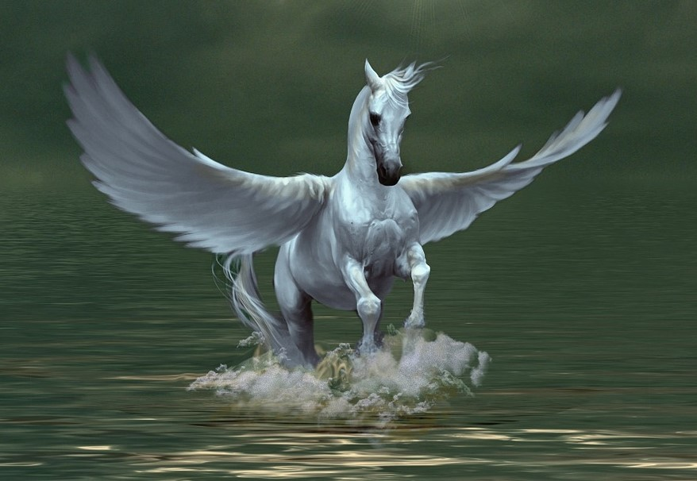

Pegasus
(Greek: Πήγασος, Pḗgasos; Latin: Pegasus, Pegasos)
is a mythical winged divine horse, and one of the most recognized creatures in Greek mythology. Usually he is depicted as pure white. Myths about him vary as the Greek myths evolve and reflect progression through successive generations of deities. In Archaic Greek mythology, Pegasus is the offspring of the Gorgon Medusa, when she was depicted as a mare. In later myths, Pegasus was foaled by Medusa as she was dying, while being decapitated by the hero Perseus. In Classical Greek mythology, the Olympian god Poseidon is identified as the father of Pegasus. Pegasus is the brother of Chrysaor and the uncle of Geryon. Pegasus was caught by the Greek hero Bellerophon near the fountain Peirene with the help of Athena and Poseidon. Pegasus allowed Bellerophon to ride him in order to defeat the monstrous Chimera, which led to many other exploits. Bellerophon later fell from the winged horse's back while trying to reach Mount Olympus, where the deities resided. After that failed attempt, Zeus transformed Pegasus into the eponymous constellation. The important difference between a Unicorn and Pegasus, is that the unicorn has a magical, spiraled horn on its head, which Pegasus does not. Pegasus has, unlike unicorns, wings.
Etymology
The poet Hesiod presents a folk etymology of the name Pegasus as derived from πηγή pēgē 'spring, well',
referring to "the pegai of Okeanos, where he was born".
A proposed etymology of the name is Luwian pihassas 'lightning', and Pihassassi, a local Luwian-Hittite name
in southern Cilicia of a weather deity associated with thunder and lightning. The proponents of this etymology
adduce the role of Pegasus, reported as early as Hesiod, as the bringer of thunderbolts to Zeus. That interpretation
was first suggested in 1952 and remains widely accepted, but Robin Lane Fox (2009) has criticized it as implausible.
Michael Brown, who has been studying ancient and medieval Greek poetry in the context of the Greek-North European
dialogue, has concluded from his studies that the word Pegasus is a pre-Celtic-PIE word, one that did not evolve
into one of the numerous common names listed in both Greek and Western languages. This concept is discussed further
in "Linguistics and Classical Theology", by William S. R. Miller, which is based on his work with Charles F. G.
Osterhaus's analysis of the word and its relationships to Greek and Italian. The relationship of "Pegasus" to
"Cyrillic" is discussed further in his Phrygian Monikers and the Naming of Greek Pronunciation "Cyrillic or
Pene-Orthogyrin" and "Pegasus" as an Early Semitic construct.
Springs
According to early myths, everywhere the winged horse struck his hoof to the earth, an inspiring water spring burst forth. One of these springs was upon the Muses' Mount Helicon, the Hippocrene ("horse spring"). Antoninus Liberalis has suggested, that it was opened at the behest of Poseidon to prevent the mountain swelling with rapture at the song of the Muses. Another spring associated with Pegasus was at Troezen. Hesiod relates how Pegasus was peacefully drinking from a spring when the hero Bellerophon captured him.
Thunderbolts
Hesiod wrote that Pegasus carried thunderbolts for Zeus.
Birth
There are several versions of the birth of the winged stallion and his brother Chrysaor in the far
distant place at the edge of Earth, Hesiod's "springs of Oceanus", which encircles the inhabited earth,
where Perseus found Medusa:
One is that they sprang from the blood issuing from Medusa's neck as Perseus was beheading her, similar
to the manner in which Athena was born from the head of Zeus after he swallowed her pregnant mother.
In another version, when Perseus beheaded Medusa, the brothers were born of the Earth,
when the Gorgon's blood fell upon her. A variation of this story holds that they were formed from the
mingling of Medusa's blood, pain, and sea foam, implying that Poseidon had involvement in their making.
The last version bears resemblance to Hesiod's account of the birth of Aphrodite from the foam created
when the severed genitals of Uranus were cast into the sea by Cronus.